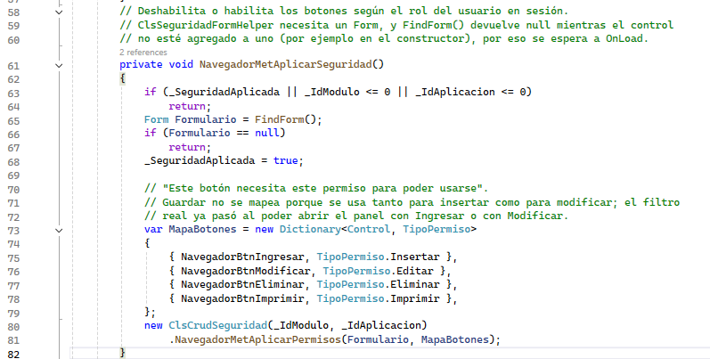
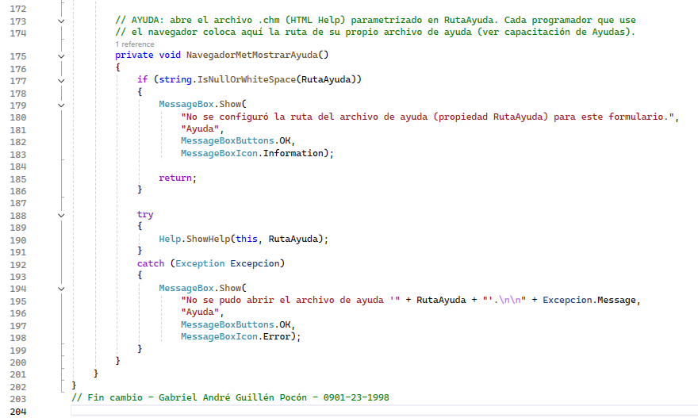

La cinta reúne todas las acciones del mantenimiento. Cada botón envía el nombre de una acción al formulario base y este decide qué método debe ejecutar.
¿Cómo se conectan los botones?
Durante la creación del control se enlaza el evento Click de cada botón con una acción como INGRESAR, MODIFICAR o SIGUIENTE. Después, el formulario recibe esa acción y llama al método correspondiente.


Botones principales
- Ingresar: abre un formulario vacío.
- Consultar: actualmente carga los registros en la cuadrícula.
- Modificar: abre la fila seleccionada.
- Eliminar: retira la fila seleccionada.
- Guardar: registra los datos del formulario abierto.
- Cancelar: cierra el formulario sin guardar.
Navegación entre registros
Inicio selecciona la primera fila; Anterior y Siguiente cambian la selección una posición; y Fin selecciona la última fila disponible.

Permisos de los botones
Ingresar, Modificar, Eliminar e Imprimir pueden habilitarse o deshabilitarse según los permisos del usuario conectado. Un botón deshabilitado indica que la acción no está permitida para ese usuario. Si el usuario no tiene acceso al módulo, el sistema muestra una advertencia y deshabilita todo el formulario.



Ayuda e impresión
Ayuda abre el archivo CHM configurado en RutaAyuda. Imprimir todavía no abre un reporte: la versión actual muestra un aviso porque la integración con Reporteador sigue pendiente.
